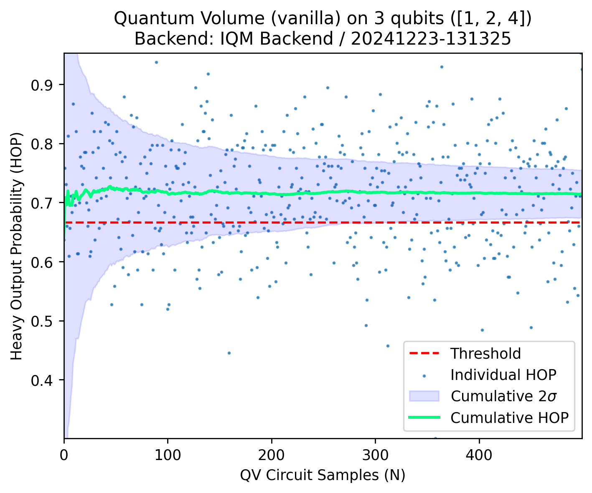
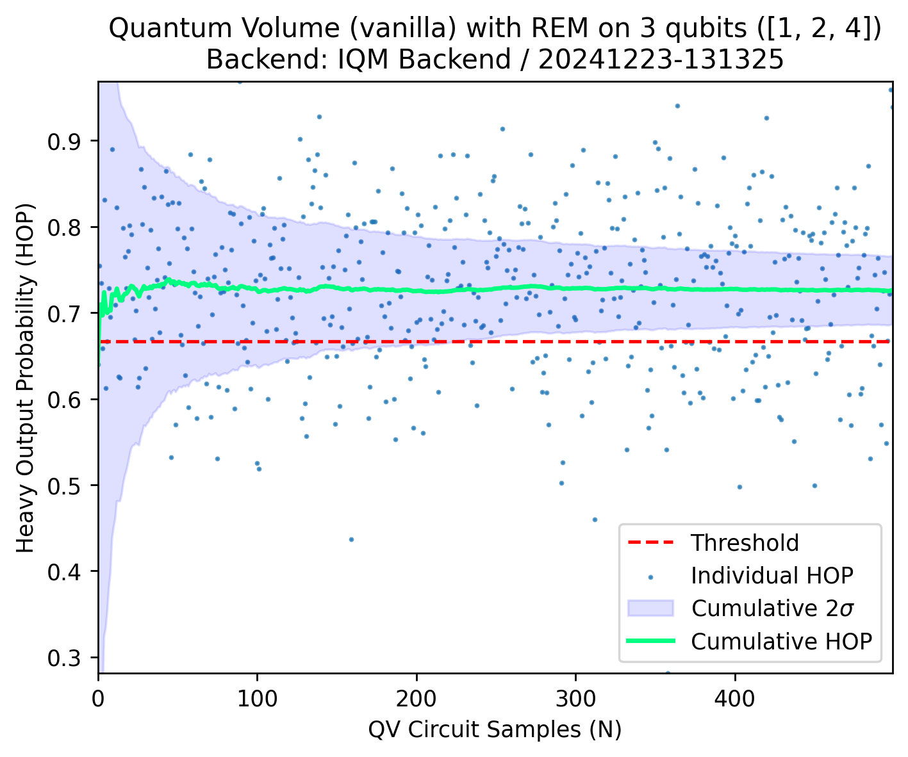

QV on Deneb#
%load_ext autoreload
%autoreload 2
Choose Deneb as a backend#
backend = "deneb"
Set IQM Token if using Resonance.#
import os
os.environ["IQM_TOKEN"] = ""
Quantum Volume Configuration#
from iqm.benchmarks.quantum_volume.quantum_volume import *
EXAMPLE_QV = QuantumVolumeConfiguration(
num_circuits=500,
shots=2**8,
calset_id=None,
num_sigmas=2,
choose_qubits_routine="custom",
custom_qubits_array=[[1,2,4]],
qiskit_optim_level=3,
optimize_sqg=True,
routing_method="sabre",
physical_layout="fixed",
max_gates_per_batch=60_000,
rem=True,
mit_shots=1_000,
)
Run the experiment#
benchmark_qv = QuantumVolumeBenchmark(backend, EXAMPLE_QV)
run0_qv = benchmark_qv.run()
2024-12-23 13:13:25,269 - iqm.benchmarks.logging_config - INFO - Executing QV on qubits [1, 2, 4]
2024-12-23 13:13:25,799 - iqm.benchmarks.logging_config - INFO - Successfully generated all 500 circuits to be executed
2024-12-23 13:13:25,799 - iqm.benchmarks.logging_config - INFO - Will transpile according to "fixed" physical layout
2024-12-23 13:13:25,799 - iqm.benchmarks.logging_config - INFO - Transpiling for backend IQM Backend with optimization level 3, sabre routing method and SQG optimization all circuits
2024-12-23 13:13:46,649 - iqm.benchmarks.logging_config - INFO - Submitting batch with 500 circuits corresponding to qubits [1, 2, 4]
2024-12-23 13:13:46,668 - iqm.benchmarks.logging_config - INFO - max_gates_per_batch restriction: submitting subbatch #1 with 500 circuits corresponding to qubits [1, 2, 4]
C:\Users\PedroFigueroaRomero\anaconda3\envs\iqm-benchmarks\Lib\site-packages\iqm\qiskit_iqm\iqm_provider.py:170: UserWarning: Unknown backend option(s): {'calibration_set_id'}
warnings.warn(f'Unknown backend option(s): {unknown_options}')
2024-12-23 13:13:50,417 - iqm.benchmarks.logging_config - INFO - Job for layout [1, 2, 4] submitted successfully!
2024-12-23 13:13:50,418 - iqm.benchmarks.logging_config - INFO - Retrieving all counts for [1, 2, 4]
2024-12-23 13:15:37,024 - iqm.benchmarks.logging_config - INFO - Adding counts of [1, 2, 4] run to the dataset
C:\Users\PedroFigueroaRomero\anaconda3\envs\iqm-benchmarks\Lib\site-packages\iqm\qiskit_iqm\iqm_provider.py:170: UserWarning: Unknown backend option(s): {'rep_delay'}
warnings.warn(f'Unknown backend option(s): {unknown_options}')
C:\Users\PedroFigueroaRomero\anaconda3\envs\iqm-benchmarks\Lib\site-packages\iqm\qiskit_iqm\iqm_provider.py:190: UserWarning: Server default calibration set has changed from e48420cb-30dc-4274-9d7d-e5fffa68f73a to 7404ae11-823a-4e66-b2c4-41361cf10c69. Create a new IQMBackend if you wish to transpile the circuits using the new calibration set.
warnings.warn(
2024-12-23 13:15:51,912 - iqm.benchmarks.logging_config - INFO - QV experiment execution concluded !
One can perform a separate run of the benchmark (also possible with a different configuration)
#run1_qv = benchmark_qv.run()
Inspect the circuits#
display(run0_qv.circuits["untranspiled_circuits"][str([1,2,4])].circuits[0].draw())
display(run0_qv.circuits["transpiled_circuits"][str([1,2,4])].circuits[0].draw())
┌──────────┐┌──────────┐ ░ ┌─┐
q_0: ────────────┤0 ├┤0 ├─░─┤M├──────
┌──────────┐│ ││ │ ░ └╥┘┌─┐
q_1: ┤1 ├┤ Unitary ├┤ Unitary ├─░──╫─┤M├───
│ Unitary ││ ││ │ ░ ║ └╥┘┌─┐
q_2: ┤0 ├┤1 ├┤1 ├─░──╫──╫─┤M├
└──────────┘└──────────┘└──────────┘ ░ ║ ║ └╥┘
meas: 3/════════════════════════════════════════╩══╩══╩═
0 1 2 ┌───────┐ ┌───────┐ »
q_0: ──────────────────────┤1 ├─■─────┤1 ├──────────────────────────»
┌────────────────────┐│ Move │ │ │ Move │ ┌────────────────────┐»
q_1: ┤ R(0.48526,0.79781) ├┤0 ├─┼─────┤0 ├────┤ R(0.58665,-1.3705) ├»
└┬──────────────────┬┘└───────┘ │ ┌───┴───────┴───┐└────────────────────┘»
q_2: ─┤ R(2.1471,4.1775) ├───────────■─┤ R(π/2,5.1521) ├──────────────────────»
└──────────────────┘ └───────────────┘ »
q_3: ─────────────────────────────────────────────────────────────────────────»
┌───────────────────┐ »
q_4: ┤ R(0.73475,3.1344) ├────────────────────────────────────────────────────»
└───────────────────┘ »
q_5: ─────────────────────────────────────────────────────────────────────────»
»
q_6: ─────────────────────────────────────────────────────────────────────────»
»
c: 3/═════════════════════════════════════════════════════════════════════════»
»
« ┌───────┐ ┌───────┐ ┌───────┐ »
«q_0: ┤1 ├─■─────┤1 ├─────────────────────────┤1 ├─■─»
« │ Move │ │ │ Move │ ┌───────────────────┐│ Move │ │ »
«q_1: ┤0 ├─┼─────┤0 ├────┤ R(0.30103,1.7711) ├┤0 ├─┼─»
« └───────┘ │ ┌───┴───────┴───┐└───────────────────┘└───────┘ │ »
«q_2: ──────────■─┤ R(π/2,11.273) ├───────────────────────────────■─»
« └───────────────┘ »
«q_3: ──────────────────────────────────────────────────────────────»
« »
«q_4: ──────────────────────────────────────────────────────────────»
« »
«q_5: ──────────────────────────────────────────────────────────────»
« »
«q_6: ──────────────────────────────────────────────────────────────»
« »
«c: 3/══════════════════════════════════════════════════════════════»
« »
« ┌───────┐ ┌───────┐ ┌───────┐ »
«q_0: ─────┤1 ├──────────────────────────┤1 ├─■────┤1 ├────»
« │ Move │ ┌──────────────────┐│ Move │ │ │ Move │ »
«q_1: ─────┤0 ├──────┤ R(1.3108,6.6909) ├┤0 ├─┼────┤0 ├────»
« ┌────┴───────┴─────┐└──────────────────┘└───────┘ │ └───────┘ »
«q_2: ┤ R(1.6665,11.243) ├──────────────────────────────┼─────────────────»
« └──────────────────┘ │ »
«q_3: ──────────────────────────────────────────────────┼─────────────────»
« │ ┌──────────────┐»
«q_4: ──────────────────────────────────────────────────■─┤ R(π/2,1.447) ├»
« └──────────────┘»
«q_5: ────────────────────────────────────────────────────────────────────»
« »
«q_6: ────────────────────────────────────────────────────────────────────»
« »
«c: 3/════════════════════════════════════════════════════════════════════»
« »
« ┌───────┐ ┌───────┐ »
«q_0: ─────────────────────┤1 ├─■────┤1 ├─────────────────────────»
« ┌───────────────────┐│ Move │ │ │ Move │ ┌───────────────────┐»
«q_1: ┤ R(0.65249,7.8837) ├┤0 ├─┼────┤0 ├────┤ R(0.24328,7.8837) ├»
« └───────────────────┘└───────┘ │ └───────┘ └───────────────────┘»
«q_2: ───────────────────────────────┼──────────────────────────────────────»
« │ »
«q_3: ───────────────────────────────┼──────────────────────────────────────»
« │ ┌──────────────┐ »
«q_4: ───────────────────────────────■─┤ R(π/2,6.865) ├─────────────────────»
« └──────────────┘ »
«q_5: ──────────────────────────────────────────────────────────────────────»
« »
«q_6: ──────────────────────────────────────────────────────────────────────»
« »
«c: 3/══════════════════════════════════════════════════════════════════════»
« »
« ┌───────┐ ┌───────┐
«q_0: ┤1 ├─■──────┤1 ├──────────────────────────────────────
« │ Move │ │ │ Move │ ┌──────────────────┐ ░ ┌─┐
«q_1: ┤0 ├─┼──────┤0 ├──────┤ R(2.3169,10.637) ├─░───────┤M├
« └───────┘ │ └───────┘ └──────────────────┘ ░ ┌─┐└╥┘
«q_2: ──────────┼──────────────────────────────────────────░────┤M├─╫─
« │ ░ └╥┘ ║
«q_3: ──────────┼────────────────────────────────────────────────╫──╫─
« │ ┌──────────────────┐ ░ ┌─┐ ║ ║
«q_4: ──────────■─┤ R(1.6809,10.299) ├─────────────────────░─┤M├─╫──╫─
« └──────────────────┘ ░ └╥┘ ║ ║
«q_5: ────────────────────────────────────────────────────────╫──╫──╫─
« ║ ║ ║
«q_6: ────────────────────────────────────────────────────────╫──╫──╫─
« ║ ║ ║
«c: 3/════════════════════════════════════════════════════════╩══╩══╩═
« 0 1 2 Perform Analysis#
result0_qv = benchmark_qv.analyze()
2024-12-23 13:15:52,651 - iqm.benchmarks.logging_config - INFO - Noiseless simulation and post-processing for layout [1, 2, 4]
2024-12-23 13:15:54,360 - iqm.benchmarks.logging_config - INFO - REM post-processing for layout [1, 2, 4] with 1000 shots
#result1_qv = benchmark.analyze(run_index=0)
List all the keys in the attributes of the dataset
attr_keys = sorted([str(x) for x in list(result0_qv.dataset.attrs.keys())])
for k in attr_keys:
print(k)
0
REM_quasidistributions
backend_configuration_name
backend_name
benchmark
calset_id
choose_qubits_routine
custom_qubits_array
execution_timestamp
max_gates_per_batch
mit_shots
num_circuits
num_sigmas
optimize_sqg
physical_layout
qiskit_optim_level
rem
routing_method
session_timestamp
shots
The data for specific experiments is indexed by 0,1,…, e.g., for the first experiment:
for k in result0_qv.dataset.attrs[0].keys():
print(k)
qubits
qv_results_type
time_circuit_generation
time_transpilation
time_batching
time_submit
time_retrieve
all_job_metadata
operation_counts
cumulative_average_heavy_output_probability
cumulative_stddev_heavy_output_probability
heavy_output_probabilities
REM_cumulative_average_heavy_output_probability
REM_cumulative_stddev_heavy_output_probability
REM_heavy_output_probabilities
#result0_qv.dataset.attrs[0]["heavy_output_probabilities"]
The observation object contains the benchmark results
result0_qv.observations
[BenchmarkObservation(name='average_heavy_output_probability', value=0.71478125, identifier=BenchmarkObservationIdentifier(qubit_indices=[1, 2, 4]), uncertainty=0.020192524094250205),
BenchmarkObservation(name='is_succesful', value=True, identifier=BenchmarkObservationIdentifier(qubit_indices=[1, 2, 4]), uncertainty=None),
BenchmarkObservation(name='QV_result', value=8, identifier=BenchmarkObservationIdentifier(qubit_indices=[1, 2, 4]), uncertainty=None),
BenchmarkObservation(name='REM_average_heavy_output_probability', value=0.7261292473074281, identifier=BenchmarkObservationIdentifier(qubit_indices=[1, 2, 4]), uncertainty=0.019943197512544274),
BenchmarkObservation(name='REM_is_succesful', value=True, identifier=BenchmarkObservationIdentifier(qubit_indices=[1, 2, 4]), uncertainty=None),
BenchmarkObservation(name='REM_QV_result', value=8, identifier=BenchmarkObservationIdentifier(qubit_indices=[1, 2, 4]), uncertainty=None)]
Generate plots#
for k in result0_qv.plots.keys():
print(k)
vanilla_3_qubits_[1, 2, 4]
vanilla_REM_3_qubits_[1, 2, 4]
Print a specific output
# result0_qv.plots["vanilla_4_qubits_[0, 1, 3, 4]"]
Or print all the plots at once
result0_qv.plot_all()

